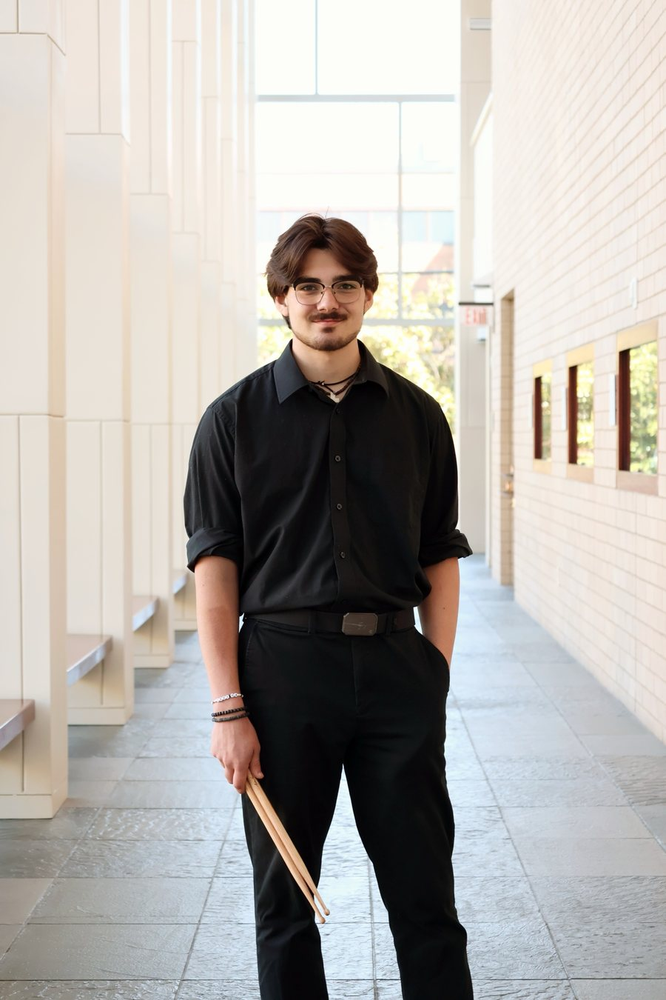
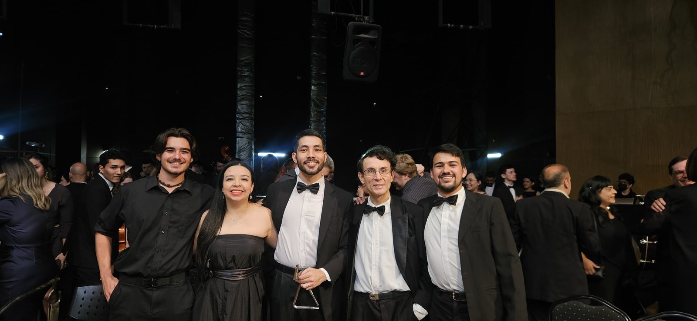
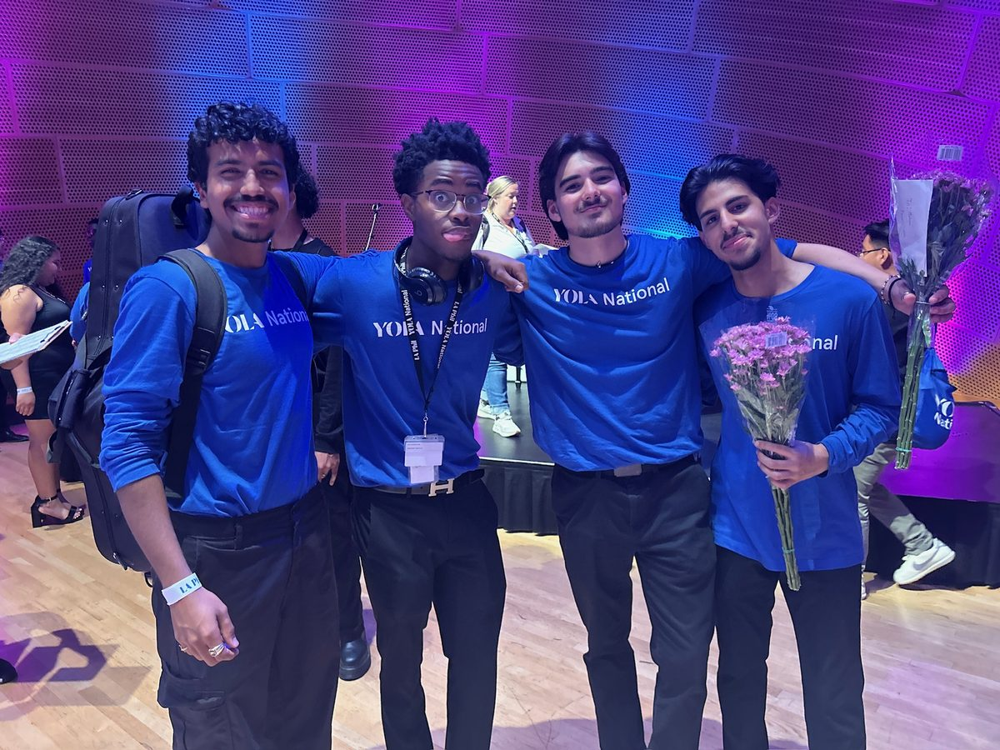
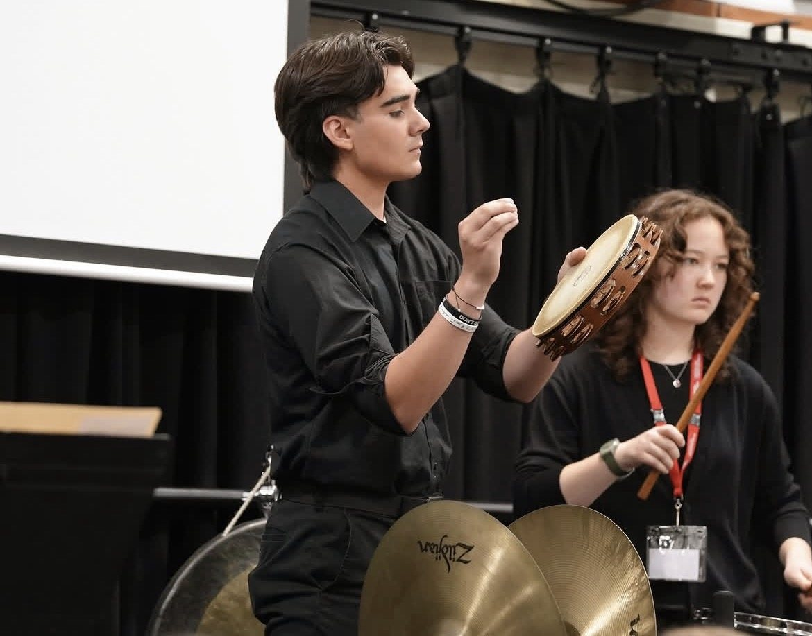

Honors and awards
- QuestBridge Scholar, Vanderbilt University
- Semper Fidelis Marine Award of Musical Excellence
- WMEA State Champion in multiple categories
- GPA 3.9+ at Vanderbilt

Founder, Global Music Initiative · Percussionist · Vanderbilt University
Makoa Lewis is a percussionist, a student at Vanderbilt University, and the founder of the Global Music Initiative.
He grew up in Hockinson, a small rural community in southwest Washington, in a family and a town where opportunities in music didn't come easily. Percussion became his path: a place to put his energy, a discipline to build on, and a reason to keep going.
At 15 he was accepted to the YOLA National Festival, which brings together young musicians from across the country, and performed alongside the LA Phil and Gustavo Dudamel. He went on to spend three years with Youth Orchestra Los Angeles, a program that was completely free for him and the students it serves, and was chosen as one of only 10 students in the United States to represent the country in the Pacific Honors Ensemble in Brisbane, Australia. Through all of it, while keeping up with school and a demanding music schedule, he worked in fast-food kitchens and on landscaping crews to support himself.
What stayed with him wasn't only the stage. It was realizing that talent is everywhere, but access isn't.
Today he is a QuestBridge Scholar at Vanderbilt, majoring in Human and Organizational Development and in Culture, Advocacy, and Leadership, with a minor in Percussion Performance. There, he developed GMI through Immersion Vanderbilt to open more of those doors: connecting people across borders and backgrounds through music, and expanding access to music education for students in underserved and rural communities. He is leading GMI's first project, the Sarangi Documentation Project in Nepal.
I didn't grow up near a concert hall. I grew up in a small town where most kids never got the chance to find out what they could do with music.
When I was fifteen, I got into the YOLA National Festival and ended up on stage with the LA Phil and Gustavo Dudamel. The performance changed me, but the people changed me more. I was surrounded by young musicians from towns and neighborhoods I'd never heard of. We came from completely different places, and most of us would never have met any other way. Someone had made a deliberate effort to put us in the same room.
That's what GMI is built on. Talent and curiosity are everywhere. Opportunity isn't. I want to build the kind of doors that were opened for me, and hold them open for as many people as possible.
Nepal is where we start. Gandharva musicians have carried stories on the sarangi for generations, and much of that tradition has never been fully recorded. I want us to document it with the musicians who carry it, respectfully and with our partners in Nepal, so it can be heard and passed on.
I also want to bring a cohort of students who, like me, might never have been in that room otherwise: students from different schools, backgrounds, and fields, working side by side. Cost shouldn't decide who gets to go.
Nepal is only the beginning. If we get this right, it becomes the first link in a growing network: university chapters and communities around the world, preserving music, connecting people who would never have met, and proving that a small, determined group of students can do work that matters.
Makoa LewisFounder, Global Music Initiative



For partnerships, press, or questions about GMI and the Nepal project.